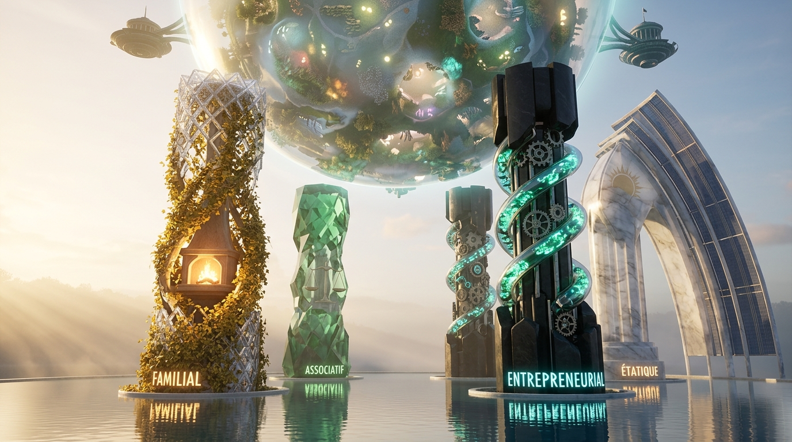
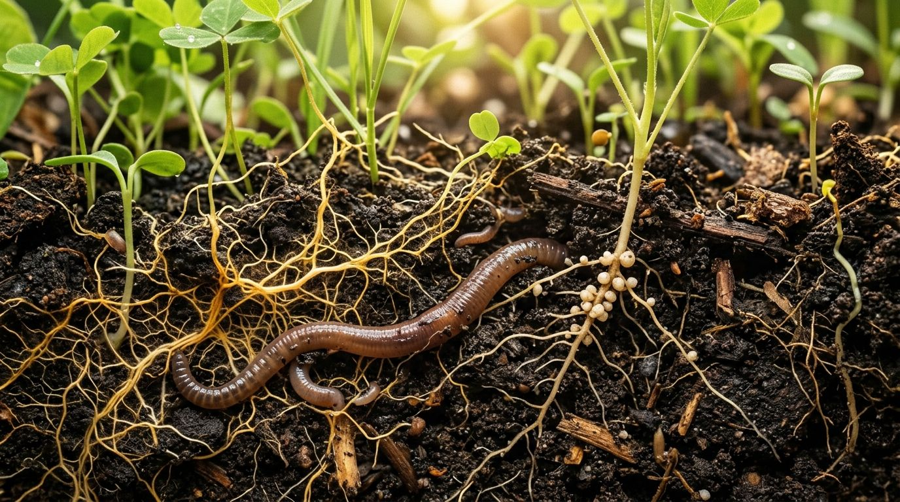
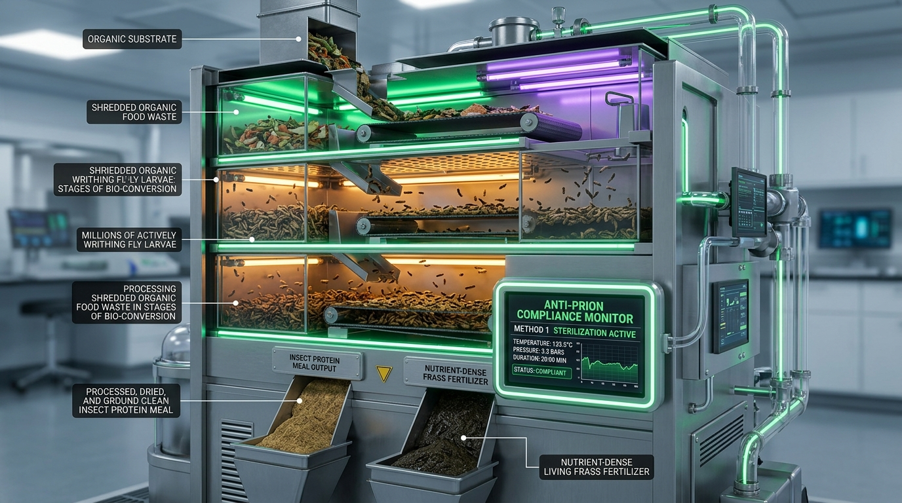
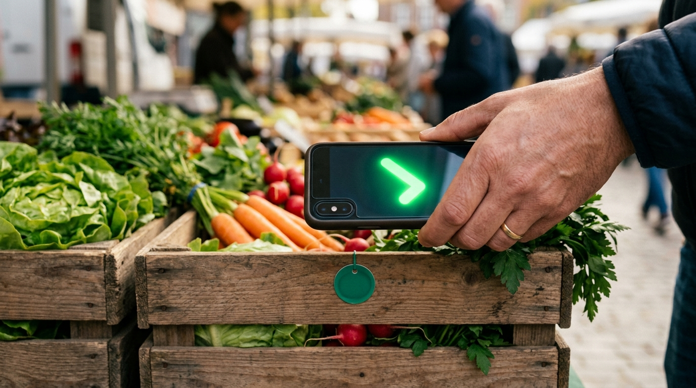
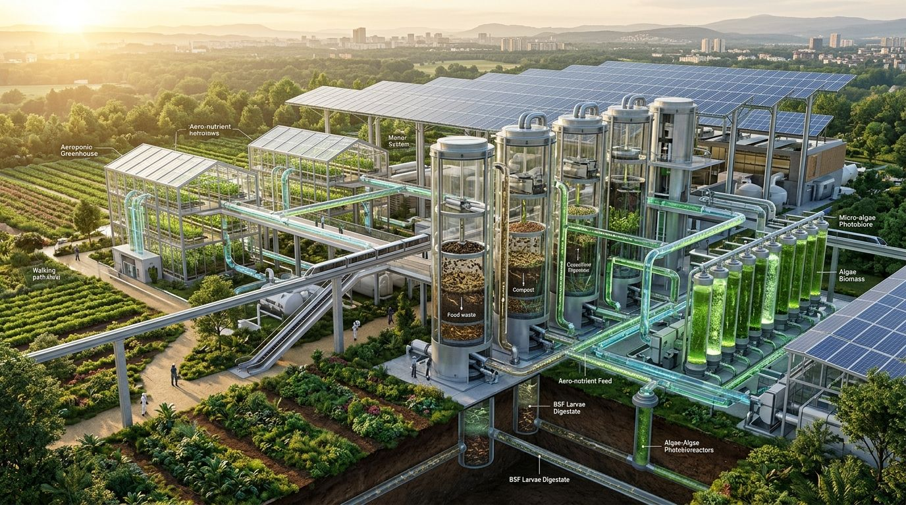
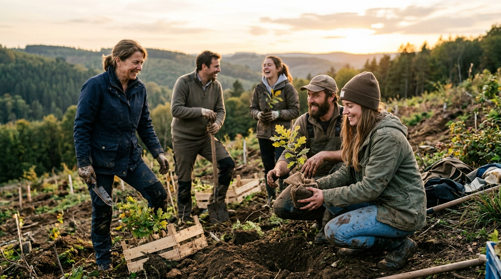

Unsere Mission 01. Les 510 065 000 km² protégés Allégorie orbitale de la Terre protégée par des anneaux de biosphère régénérative. Prompt de génération Wide cinematic shot of planet Earth seen from orbit, where the entire 510,065,000 square kilometers surface is protected by glowing biospheric energy rings in vibrant emerald green and warm liquid gold. The continents pulse with hyper-connected ecological networks, thriving biodomes, lush reforested canopies, and regenerative biotechnology hubs. High-tech subtle holographic overlays depict living carbon cycle loops and zero-entropy closed-loop cycles. Dramatic side lighting from a rising sun, deep dark celestial background with distant nebula, volumetric lighting, photorealistic textures, Unreal Engine 5 aesthetic, 8k resolution.
Unsere Mission 02. Deux civilisations Dualité entre les capitales occidentalisées et les zones d'extraction non-occidentalisées. Prompt de génération A wide widescreen conceptual illustration representing the world at the dawn of the third millennium divided into two civilizations: on one side, affluent western state capitals with monolithic parliamentary domes and automated glass corporate skyscrapers; on the other side, non-western resource-rich lands marked by ecological extraction and vulnerable communities. In the sky above, a glowing interconnected web of 8 billion golden human silhouettes represents the global Verbraucher-Bürger rising to bridge the divide. Atmospheric lighting, rich contrasting emerald green, deep charcoal and vibrant gold accents, 8k resolution.
Unsere Mission 03. The three plagues Guerre, famine et banditisme. Prompt de génération A powerful allegorical triptych detailing the three human plagues ravaging non-westernized nations: 1. War, 2. Famine, 3. Banditry under geopolitical extraction conditions. Dark atmospheric allegory, triptych narrative art, 8k.
Unsere Mission 04. La quête symbiosique Produire pour s'enrichir en développant somptueusement la planète. Prompt de génération A magnificent circular visual representation of the Absolute Symbiosic Quest of GREENWAR: in the center, a luminous celestial biosphere surrounded by four golden rings representing Zero Exploitation, Eco-Aligned Profits, Closed-Loop Bioremediation, and P2P Transparency. Glowing green energy pulses flow from the center into revitalized rivers, biodiverse agro-forestry belts, and sustainable community biomanufacturing hubs. Warm golden ray lighting, futuristic clean aesthetic, photorealistic, 8k resolution.
Unsere Mission · Solutions 05. L'arme des 8 milliards Le pouvoir souverain de l'achat éclairé. Prompt de génération A high-concept visual metaphor depicting the economic liberation of 8 billion citizens: In the center, a gigantic translucent golden shield inscribed with glowing mathematical and ecological vectors radiates over a vibrant blue-green Earth. From the hands of diverse people around the world, beams of green and gold light converge onto the shield, deflecting dark extractive industrial gears while channeling pure revitalizing energy into depleted rivers and forests. Cinematic perspective, lens flare, volumetric rays, Unreal Engine 5 render, 8k resolution.
 Non utilisée 06. Les quatre piliers de société Familial, associatif, entrepreneurial, étatique et leurs quatre pouvoirs. Prompt de génération Monumental architectural visualization of four grand crystal and living-flora pillars supporting a luminous spherical ecosystem representing humanity. The four pillars are labeled with glowing runes: 1. Familial, 2. Associatif, 3. Entrepreneurial, 4. Étatique. Above them hover the four symbiotic powers: Executive, Legislative, Judicial, and Media. Rays of dawn light cut through morning mist, serene reflection pool in the foreground, breathtaking scale, photorealistic architectural photography, Unreal Engine 5 render, 8k.
Unsere Mission 07. Citoyens & familles Le pilier familial. Prompt de génération The Familial Pillar: A multi-generational family sitting together around a glowing hearth surrounded by living vines, transmitting ancient wisdom. Warm cozy hearth photography, 16:9.
Unsere Mission 08. Associations Die Assoziative Säule. Prompt de génération The Associatif Pillar: Citizens, legal volunteers and ecological auditors in a community workshop. Sunlit civic workshop photography, 16:9.
Unsere Mission 09. Entreprises Le pilier entrepreneurial. Prompt de génération The Entrepreneurial Pillar: Eco-engineers in a cutting-edge regenerative bio-lab testing organic nutrient solutions. High-tech eco bio-lab photography, 16:9.
Unsere Mission 10. États & nations Le pilier étatique. Prompt de génération The Étatique Pillar: Modern timber and marble civic sovereignty parliament hall. Transparent sunlit parliament photography, 16:9.
Unsere Mission 11. Le pacte d'intégrité Pensée, parole et action alignées. Prompt de génération An epic illuminated visual medallion symbolizing the triad of human integrity: Mind, Speech, and Action. Sacred philosophical symbolism, gold & emerald illuminated manuscript style, 8k.
Die Diagnose 12. La genèse d'après-guerre Peur de la raréfaction des ressources et de la pollution irréversible. Prompt de génération A panoramic historical visualization of the post-WWII economic growth era: massive smoking industrial blast furnaces and assembly lines contrasting with early international diplomatic summits drafting sustainable development treaties. In the foreground, two impending global crises are symbolized: on one side, depleted resource quarries with empty conveyor belts; on the other, dark smog layers settling over pristine green valleys. Deep sepia and bronze tones with glowing amber light rays, photorealistic period textures, cinematic composition, 8k resolution.
Die Diagnose 13. Die Wirtschaftliche Säule La rentabilité comme unique objectif. Prompt de génération Critique of the Economic Pillar: Boardroom executives watching real-time stock profit tickers while factory smokestacks billow outside. Dark boardroom photography, 16:9.
Die Diagnose 14. Die Assoziative Säule Survie et renom comme uniques objectifs. Prompt de génération Critique of the Associatif Pillar: Oversized corporate subsidy check delivered under flashing press cameras. Charity check presentation photography, 16:9.
Die Diagnose 15. Die Ökologische Säule Le déficit reporté sur le Consumer-Citizen. Prompt de génération Critique of the Environnemental Pillar: Anxious household consumer examining green carbon tax statements at a kitchen table. Carbon tax burden photography, 16:9.
Die Diagnose 16. The three quests Argent, pouvoir, gloire. Prompt de génération A monumental allegorical triptych representing the Three False Conquests of modern sustainable development: 1. The Conquest of Money (a towering golden banking obelisk rising above smoky mega-factories and depleted quarries), 2. The Conquest of Power (a grand neoclassical parliament hall bathed in dramatic purple and amber spotlighting where bureaucratic statutes and carbon tax treaties are signed), 3. The Conquest of Glory (a gleaming crystal philanthropic gala hall where awards are handed out against a backdrop of subsidized brochures). Golden light rays juxtaposed against somber shadows, hyper-detailed rendering, epic cinematic atmosphere, Rembrandt lighting, 8k resolution.
Die Diagnose 17. Die unsichtbare Kette der Überproduktion Manufactures clandestines et vitrines festives. Prompt de génération A powerful split composition depicting the invisible supply chain of global overproduction: On the left, inside a dark, humid, poorly lit underground sweatshop filled with raw plastic vapors, exhausted young factory workers assemble plastic toy castles under harsh industrial fluorescent light. On the right, a radiant, festive, beautifully decorated European Christmas department store with warm golden fairy lights, where joyful affluent families place the same packaged toy castles into shopping carts under promotional signs. A faint ghostly conveyor belt connects the two worlds across the divide. Highly emotional, cinematic depth of field, award-winning photojournalism style, 8k render.
Solutions 18. Boycott & l'achat choisi Vérifier avant d'acheter. Prompt de génération An empowered consumer in a modern eco-market using a smartphone interface to scan and verify the zero-exploitation certificate of organic produce. Empowered consumer photography, 16:9.
 Solutions 19. Le sol vivant Restaurer le vivant. Prompt de génération Macro photograph of living soil: roots, seedlings, an earthworm and mycelium in dark humus, warm natural light, 16:9.
 Solutions 20. Sarcomusation & Hermetia illucens Total biodegradation en 72 heures. Prompt de génération A detailed cutaway scientific visualization of an automated eco-bioreactor utilizing Hermetia illucens (Black Soldier Fly) larvae: illuminated glass chambers where millions of larvae rapidly bio-convert organic matter in 72 hours under warm ultraviolet light. Output chutes separate clean insect protein meal and nutrient-dense living frass fertilizer. Prominently displayed is a glowing digital safety monitor showing strict Anti-Prion compliance (Method 1 sterilization: 133°C, 3 bars, 20 minutes). High-tech laboratory aesthetic, clean emerald green and amber illumination, photorealistic 8k render.
 Solutions 21. Ed25519 cryptographic traceability Contrôle direct par smartphone. Prompt de génération A futuristic holographic network visualization of decentralized P2P cryptographic traceability (Ed25519 / AeterniTrak): A four-stage illuminated pipeline showing 1. Ranger NFC Badge & GPS logging, 2. Automated LFA / PCR rapid screening for contaminants and Pentobarbital, 3. Certified Method 1 thermal sterilization (133°C, 3 bars), 4. Immutable Ed25519 cryptographic signature block sealing the batch history. In the foreground, a smartphone camera displays an instant green verifiable authenticity seal. Clean cyber-emerald and liquid gold neon lighting, photorealistic UI overlays, 8k resolution.
 Solutions 22. The bio-agro-industrial hub Boucle fermée zéro déchet. Prompt de génération Futuristic isometric architectural concept of a zero-waste closed-loop bio-refinery and eco-agricultural hub: Automated vertical biodigesters powered by Hermetia illucens black soldier fly larvae breaking down organic matter, interconnected with aeroponic greenhouses, micro-algae photobioreactors, and solar canopies. Transparent glass tubes carry nutrient streams between bio-reactors and fertile re-wilded soil plots. Golden morning sunlight, lush vegetation, clean industrial design, architectural masterplan visualization, photorealistic, 8k.
 Solutions 23. Rejoindre l'ASBL La charte d'action indépendante. Prompt de génération A heroic cinematic group portrait of GREENWAR ASBL team: Scientists, legal advocates, ethical farmers and engaged citizens holding an emerald shield emblem in a reforested landscape at sunset. Heroic group portrait photography, 16:9.